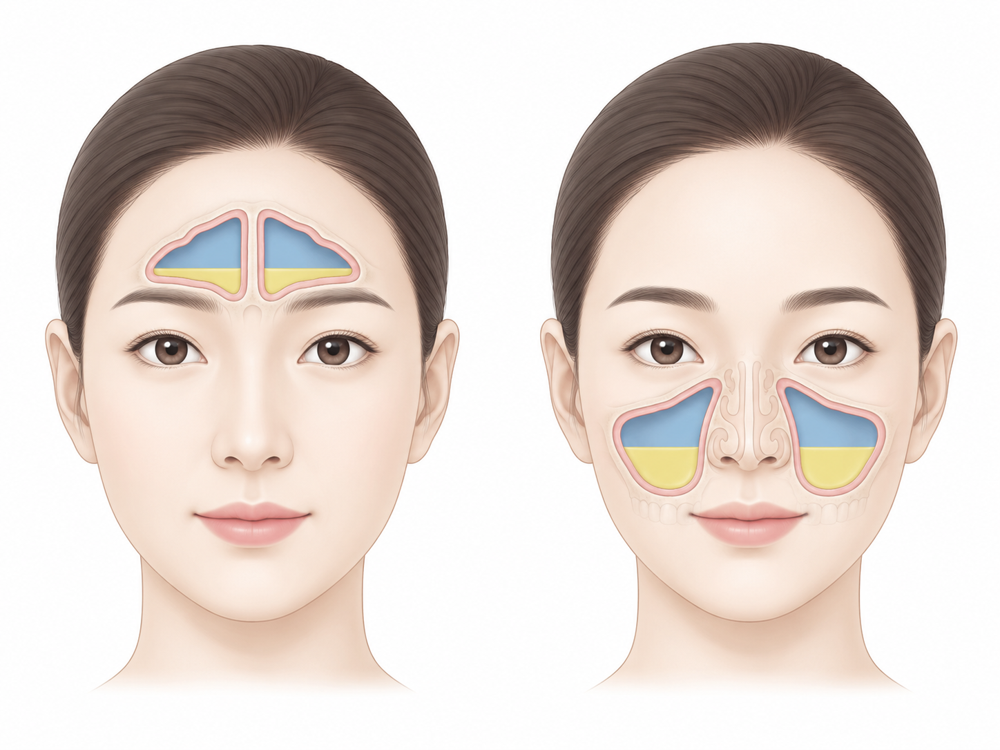

감기·인후염은 대부분 바이러스 — 항생제로 빨리 낫지 않습니다
NO BENEFIT
효과가 없습니다
감기에 항생제를 먹어도 더 빨리 낫지 않습니다.
SIDE EFFECTS
부작용은 생깁니다
필요 없이 먹어도 설사·발진 같은 부작용은 올 수 있습니다.
RESISTANCE
내성만 남깁니다
몸속 세균이 약에 잘 안 듣게 변하고, 몇 달 남기도 합니다.
SAVE IT
폐렴 때 쓸 약을 아낍니다
정말 세균 감염이 왔을 때 잘 듣도록 아껴 둡니다.
항생제가 필요한지는 진찰로 판단합니다

| 이럴 때 | 진찰에서 보는 점 |
|---|---|
| 코 증상이 오래 갈 때 |
코막힘·콧물·후비루(Postnasal drip)가 10일 넘게 좋아지지 않거나, 좋아지다가 다시 나빠질 때 — 콧물 색만으로 정하지 않습니다 |
| 얼굴 통증 | 광대·눈 주위 통증·압박감 — 부비동염(Sinusitis) 의심. 부비동 안에 액체가 고이면 압박감·통증·코막힘이 오래 갈 수 있습니다 |
| 청진 이상 | 폐렴(Pneumonia) 등 세균 감염이 의심되는 소리가 나면 흉부 X선 등으로 더 확인합니다 — 청진 소리만으로 항생제를 정하지 않습니다 |
| 세균성 인후염 | 검사로 확인된 경우 |
증상 하나로 정하지 않습니다 — 기간·중증도·재악화를 함께 봅니다. 단순 기관지염은 대개 항생제 없이 낫습니다.
 쓸 때는 끝까지 — 항생제와 감기약은 끊는 법이 다릅니다
쓸 때는 끝까지 — 항생제와 감기약은 끊는 법이 다릅니다
| 구분 | 항생제(Antibiotics) · 세균을 없애는 약 | 감기약·소염제 · 증상을 덜어 주는 약 |
|---|---|---|
| 좋아지면? | 좋아져도 처방받은 기간대로 드세요. 임의로 줄이거나 끊지 말고 먼저 상의해 주세요 | 좋아지면 먼저 끊어도 됩니다 |
| 불편하면? | 설사는 끊기 전에 먼저 연락 주세요. 새 발진·두드러기가 생기면 다음 복용 전 즉시 의료진에게 문의하세요. 단, 숨이 차거나 입술·혀가 붓거나 물집 생긴 발진은 바로 끊고 응급실로. 남은 약은 다음 감기에 먹지 않습니다 | 줄이거나 끊고, 진료 때 말씀해 주세요 |
수액 · IV FLUIDS
- 탈수·설사·구토로 못 드실 때 — 수분·전해질을 채워 회복에 큰 도움이 됩니다
- 감기로 지쳤을 때 — 잘 못 드시고 기운이 떨어지면 수분·전해질과 함께 비타민을 보충하는 수액을 진료에서 선택할 수 있습니다
- 회복을 돕는 보조 치료로, 감기를 직접 낫게 하는 치료제는 아닙니다
- 실손 보험 — 감기·영양 수액은 인정되지 않을 수 있습니다. 보장은 약관에 따라 달라 접수에서 안내해 드립니다
| 자주 듣는 말 | 실제로는 |
|---|---|
| "항생제를 먹어야 빨리 낫는다" | 감기는 항생제로 빨리 낫지 않고, 부작용과 내성만 남습니다 |
| "지난번처럼 항생제 넣어 달라" | 지난번엔 저절로 낫는 시기와 겹친 것입니다. 이번은 이번 진찰로 봅니다 |
| "피곤하면 수액만 맞으면 된다" | 피로가 오래가면 간수치·갑상선 기능·빈혈·염증 수치 등 내과 문제부터 확인합니다. 비타민 수액은 일부 피로에 도움이 될 수 있어, 신장질환·결석 병력 등 몸 상태를 살펴 성분·용량을 정합니다 |
감기약을 먹는 중에 이러면 다시 진료를 받으세요
FEVER
열이 이어질 때
38.5°C 이상 열이 지속되거나 3~4일 넘게 이어질 때, 열이 내렸다가 다시 오를 때
WORSENING
좋아지다 다시 나빠질 때
좋아지다가 열·기침이 다시 나빠지거나, 1주 넘게 뚜렷한 호전이 없을 때
COUGH · SPUTUM
기침·가래가 심해질 때
진한 가래가 늘거나 가래 때문에 잠을 못 잘 때 — 색보다 양·냄새·피 섞임·기간을 봅니다
FLUIDS
물을 잘 못 마실 때
물을 잘 못 마셔 소변이 줄면 당일 내원하세요
다시 오시면 체온·산소포화도·청진으로 확인하고, 필요하면 흉부 X선·독감/코로나 검사·혈액검사를 합니다. 갑자기 열이 나면 「열이 나면 — 독감·코로나 검사는 언제 받나요?」 안내문을, 숨이 차면 뒷면의 '숨이 찰 때' 표를 보세요.